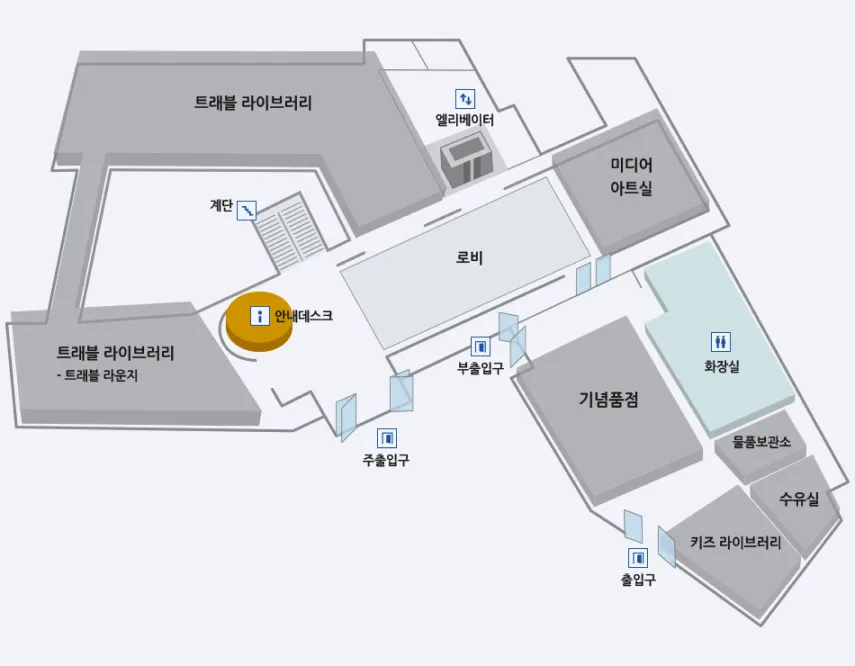

안전이 더
가까워지는 곳
안전한 미래를 국토안전관리원
안전체험관에서 함께 경험해보세요.
국토안전과 함께하는
안전체험관 소개
눈으로 보고, 몸으로 느끼며
국토안전의 가치를 직접 경험해보세요!
국토안전동행관은 국민과 함께 국토의 안전을 지키고 미래를 준비하는 공간입니다.
여러 전시와 체험 프로그램을 통해 첨단 안전 기술과 재난 대응 체계를 직접 보고,
느끼며 배울 수 있습니다. 안전에 대한 이해와 관심을 높이고, 모두가 함께 안전한 국토를 만들어가는 시작점입니다.

플러스안전체험관은 국민과 함께 국토의 안전을 지키고 미래를 준비하는 공간입니다.
여러 전시와 체험 프로그램을 통해 첨단 안전 기술과 재난 대응 체계를 직접 보고,
느끼며 배울 수 있습니다. 안전에 대한 이해와 관심을 높이고, 모두가 함께 안전한 국토를 만들어가는 시작점입니다.
스마트안전체험관은 국민과 함께 국토의 안전을 지키고 미래를 준비하는 공간입니다.
여러 전시와 체험 프로그램을 통해 첨단 안전 기술과 재난 대응 체계를 직접 보고,
느끼며 배울 수 있습니다. 안전에 대한 이해와 관심을 높이고, 모두가 함께 안전한 국토를 만들어가는 시작점입니다.